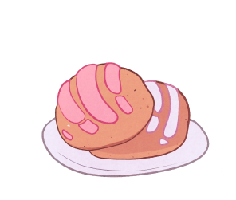

156.25 grams (3-3/4 cups) sifted all-purpose flour, plus extra for dusting
39.06 grams (½ cup + 2 tablespoons) white sugar
1.56 grams (2-½ teaspoon) active dry yeast
0.94 grams (½ teaspoon) salt
31.25 grams (½ cup) unsalted butter, at room temperature
31.25 grams (2 eggs) large eggs
1.56 ml (1 teaspoon) vanilla extract*
37.5 ml (½ cup) milk (warm).
**Remeber you also need the oven and baking utensils.
Principal ingredients
156.25 grams (3-3/4 cups) sifted all-purpose flour, plus extra for dusting
39.06 grams (⅔ cup) shortening (plus extra for greasing the dough and baking sheets)
39.06 grams (1 cup plus 2 tablespoons) powdered sugar
46.88 grams (1-1/8 cup) all-purpose flour
1.56 grams (2-1/2 teaspoons) cocoa powder (for half the frosting, if desired)
1.56 grams (1 teaspoon) cinnamon (optional for white frosting)

Instructions
Please remember to clean your kitchen before
Have each ingredient ready and measured before you begin, and be careful to read the notes carefully. Mix the all-purpose flour, yeast, sugar, and salt in the bowl of a stand mixer on medium speed, just to mix well.
Add the butter and mix well (using the stand mixer with the hook attachment), then mix in the eggs and vanilla extract and slowly pour in the milk a little at a time until the dough looks cohesive (you may need less or more milk, as some flours absorb more liquid than others). Keep beating the mixture for about 7 minutes on medium speed. Add a little more flour around the inside of the bowl (2-3 tablespoons), just enough to make the dough pull away from the bowl. The dough should be soft and slightly sticky.
The dough should feel very smooth and elastic.
Turn the dough out onto the floured work surface and knead it enough to form a ball.
Put this ball of dough into a large greased bowl to rest. Cover it with plastic wrap (or wax paper) and a kitchen towel. Let the dough rise in a warm place for about 2 hours until it doubles in size. I usually turn on the light in my oven and place the bowl inside, near the light. Keep in mind that if your kitchen is cold, the dough will take longer to rise. Be patient and don't try to move on to the next step until the mixture has doubled in size.
Instructions
You can do this while bread is getting cool
While the dough is resting, you can prepare the sugar topping. Soften the butter with the spatula until it is very creamy and then add the powdered sugar. Finally, add the flour little by little (add the ground cinnamon at this step). Set this mixture aside to use later. If you are making half of the Conchas with the chocolate topping, then divide the dough into two equal portions and add the cocoa powder to one of the halves, mixing until it is very well combined.
Once the dough has risen and doubled in size, place it on a floured surface and let it rest for about 5 minutes. Divide the dough into 16 portions (60 grams each). To shape each ball, lightly flour your hands and place each portion of dough on the work surface and gently press with your hand, twisting your hand to form the balls.
Place each dough ball on greased baking sheets and continue until you have finished shaping all of the dough.
Using your hands, spread the top of each ball with a little butter. Do not skip this step, as it will help the topping stick to the dough.
To add the topping, flour your hands and divide the topping paste into 16 balls. Use your hands to press each one into a small, flat circle (I like to use a piece of plastic, like when you make tortillas). Place this disk on top of the dough ball and press down very firmly.
Once you have finished placing the topping on the buns, use a shell cutter or you can use a knife to decorate them in the traditional shell shape.
Allow the shells to rise in a warm place until they are almost double in size. Depending on the temperature of your kitchen, this step can take 1 to 2 hours. Don't let them rise too much, because if you let them rise too much, they will collapse in the oven.
Bake in a preheated oven at 165º Celsius for 20 minutes, or until the bottoms of the shells are lightly browned. If you are placing more than one baking tray in your oven, switch after 10-12 minutes. Move the tray from the bottom rack of your oven to the top rack and vice versa to ensure even cooking.